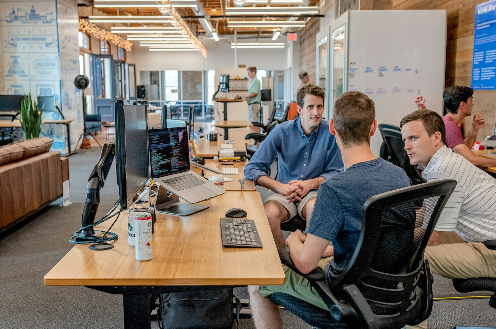

Estratégia que cabe em uma página e sobrevive à segunda-feira.
Um sócio e um consultor dentro da sua empresa dois dias por semana, trabalhando com a sua equipe e não em paralelo a ela.
Três frentes, que quase sempre se cruzam no mesmo projeto. Quem vende o projeto é quem conduz o projeto.
Eduardo ViannaFinanças e resultado


❦
Formatos de contratação
Escolhemos o formato junto com você, depois do diagnóstico.
Diagnóstico
- Diagnóstico expresso3 semanas
Entrevistas e leitura dos números
- Diagnóstico completo6 semanas
Com visita à operação e plano
- Segunda opinião10 dias
Sobre um plano já existente
Projeto
- Projeto de margem6 meses
Preços, portfólio e custos
- Plano estratégico4 meses
Com desdobramento em metas
- Sucessão12 meses
Acordo, conselho e transição
- Estrutura comercial5 meses
Processo, metas e remuneração
Acompanhamento
- Conselho consultivomensal
Reunião mensal com os sócios
- Diretor por tempo parcial2 dias/semana
Financeiro ou comercial
- Mentoria de sucessoresquinzenal
Encontros quinzenais
Os resultados citados referem-se a projetos concluídos e variam conforme o porte e o setor de cada empresa.
Horários
| Segunda a sexta | 9h às 18h |
|---|
Onde estamos
Rua Comendador Araújo, 510 — 14º andar, Batel, Curitiba
Projetos conduzidos pelos sócios.
Meta em número e prazo para acabar.

Vamos conversar sobre a sua empresa?
A primeira conversa dura uma hora, não custa nada e é com um dos sócios.